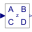

PartialClockedMIMOBlock with multiple clocked input and multiple clocked output Real signals |
|
Parameters (2)
| nin |
Value: 1 Type: Integer Description: Number of inputs |
|---|---|
| nout |
Value: 1 Type: Integer Description: Number of outputs |
Connectors (2)
| u |
Type: RealInput[nin] Description: Connector of clocked, Real input signals |
|
|---|---|---|
| y |
Type: RealOutput[nout] Description: Connector of clocked, Real output signals |
Extended by (1)
|  |
Modelica.Clocked.RealSignals.Periodic Discrete-time State Space block |